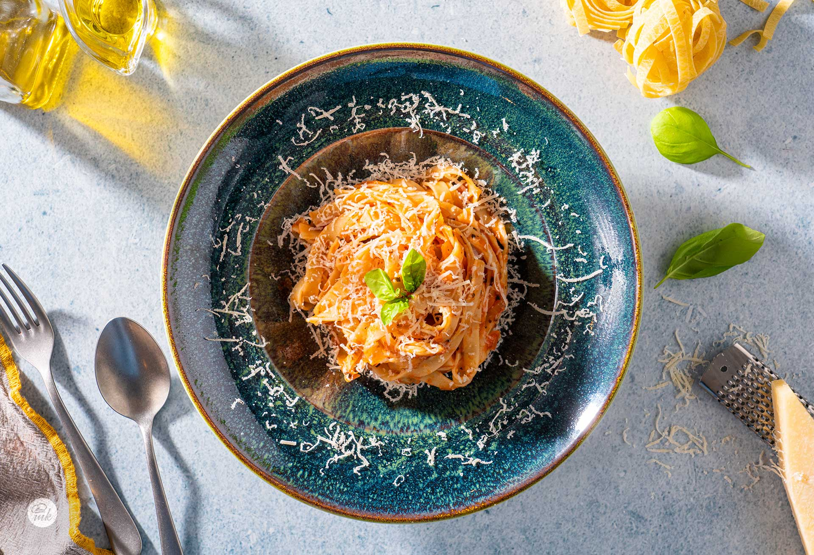

Spaghetti Napoli with tomatoes, garlic, onions, basil and parmesan cheese

For 4 portions:
- 300 g of spaghetti
- 600 g canned tomatoes
- 2 cloves of garlic
- 50 g onion
- 50 ml olive oil
- 20 г egg yolks
- parmesan cheese
- basil
Method of preparation:
Cook the spaghetti in boiling salted water according to package instructions.
The finely chopped onion is fried in heated olive oil together with the chopped garlic.
Add the pureed canned tomatoes, basil, black pepper and salt to taste. Let the sauce boil.
Drain the spaghetti and add to the sauce. The dish is stirred and left to boil for a few minutes.
The ready spaghetti are served sprinkled with grated Parmesan.
Preparation time: 40 minutes

Calories and nutritional value
Portion 251 g
Calories 436 calories
Carbs 68 g 63%
Fats 13 g 27%
Protein 12 g 11%
Cholesterol 0 mg
★
★
★
★
★
0 / 5